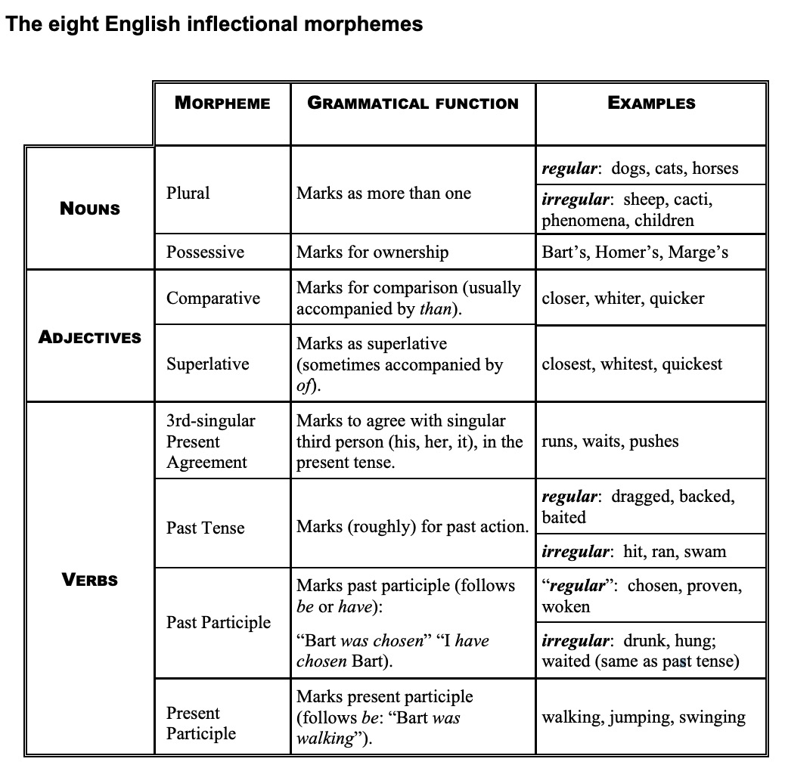

Morphological Productivity
Derivation and Inflection
Thanks to Dr. Bill Vicars for the following videos, and to Lexi Ricasata for collecting them.

Bases: hug, love, free, corrupt, sing, cute, meme
Prefixes: re-, un-, pre-, de-,
Suffixes: -en, -ed, -er, -ee, -ize, -est
Tell me some combinations that work
Tell me some combinations that don’t work
-holic from ‘alcoholic’
cran- from ‘cranberry’
admi- from ‘admissions’
del- from ‘deleted’
Affixes that exist in the language that don’t get used for new words
Affixes that exist in the language which only work with some words
Evidence that although some things can be ‘broken off’ and still used, but others really can’t.
The degree to which a grammatical process is in use by speakers
Can we use this morphological pattern with a brand new base?
Is the use of this morpheme constrained? Or, where can it apply?
Part of speech (e.g. plural only attaches to nouns, ‘-ee’ only attaches to verbs
Sound structure (e.g. free+-ee sounds illegal)
Even meaning (e.g. some affixes don’t make any sense on some words)
We can use them to create a word we’ve never heard, and it just works
“Uh, I need an adjective for ‘simp’… uh… simpish?”
Everybody understands, nobody’s confused, it feels right, and we move on
Productive morphology is boring
They’re understandable, but seem ‘off’, they ‘raise eyebrows’
They feel like new words, or like you’ve coined a phrase or are doing ‘wordplay’
They may even take a moment to figure out
We can call these not productive, so much as creative
“Unbreak my heart, uncry these tears”
“Can you stop linguisting and help me vacuum?”
“Put down the haterade”
“The problem was solved computeringly”
“It looks like one of those awful low effort TikTok DIY Tutorials, so TikTacky”
N-now th-that that don’t kill me
Can only make me stronger
I need you to hurry up now
’Cause I can’t wait much longer
I know I got to be right now
’Cause I can’t get much wronger
–Kanye West’s ‘Stronger’
Blends like ‘frenemy’ or ‘mansplain’ or ‘covidiot’ or ‘situationship’
Clipping words down like ‘fam’ or ‘totes’ or ‘catching an L’ or ‘pog’
It’s hard to say when an affix is being used ‘off label’
Measurements of how ‘innovative’ a usage is are tough to do
There’s not a hard and fast line
… but we can usually tell when a combination is expected, or exceptional
Some new words which you instantly understood and were boring
Some new words which you instantly understood, and were neat
Some new words which took you a bit to understand
cat, penguin, bear, squirrel, dog
cat, cats, cat’s
clean, red, moist, thrown
white, whiter, whitest
yeet, drag, suspect, eat, drink
prove, proves, proved, proven, proving
yeet, yeets, yote, youghten, yeeting
“For this sentence or meaning, I need a different form, I’d better add something”
Making it a word plural, possessive, comparative, superlative
Marking verbal person (e.g. “I go” vs “He goes”), past tense, past and present participles
There is no doubt that these forms are ‘the same word’
A morphological process which change the meaning of a word in a given linguistic or grammatical context
cat, cats, cat’s
white, whiter, whitest
yeet, yeets, yote, youghten, yeeting


“I don’t have a word for this, but I know a way I can make one”
cat -> catty, catlike, cattish, catter, cathouse
California -> Californian, Californiaish
build -> rebuild, overbuild, underbuild, buildup, building, builder
Not all words can take all affixes
They’ll change the part of speech (e.g. from a noun to a verb)
They’ll change the meaning in less predictable ways
Inflectional morphology creates boring, predictable forms
Trucker, Hooker, Adapter, YouTuber, Steeler, Waiter
Because meanings can be unpredictable, derivation tends to merit explanation and description
Derivation is viewed as ‘adding something new to the dictionary’, generally speaking
Compounding takes two existing free words and combines them for a new meaning
Most Compounds have a ‘head’ which controls the part of speech and part of the meaning
Compounding acts like derivation
Salad Dressing, Butt Dial, Booty Call, Big Mac, Blowhard, pushover, Hawkeye
Substitutions feel very creative
Derivational morphology is used to build new words
Inflectional morphology changes their meanings in predictable ways in sentences
The line between these can get blurry in some cases
There are productive and creative uses of templates
There are inflectional and derivational morphological processes
Compounding is absolutely a thing in memes
Morphological Productivity: The ability of a morphological phenomenon to apply fluently and fluidly to new words.
Creativity: The application of morphological phenomena outside of the expected domain, resulting in something that feels ‘new’, unexpected, or like a ‘brand new word’
Derivational Morphology: Attaching affixes that change the part of speech of the root, or change something important about the meaning
Inflectional Morphology: Inflectional morphology predictably changes the meaning of the word in the sentence, but doesn’t change the part of speech or meaning of the whole word in a deep way.
Compounding: A morphological process which comes from combining two existing free morphemes (not affixes) into a new word